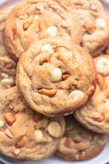
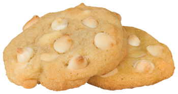

White chocolate cashew cookies are definitely my favorite type of baked good and probably in my top ten foods. My preferred way to eat it is microwave it for 15 seconds to make it warm and chewy, almost like it just came out of the oven. A more popular version of this cookie is white chocolate macedamia nut however I think cashews taste the same in a cookie if not better and are easier to find at grocery stores. I don't have a specific recipe I usually use but for this one I am using this recipe.

